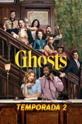

Temporada 1 | 18 Episodios
En esta primera temporada se presenta la historia: Samantha y Jay heredan la mansión y descubren que está llena de fantasmas. Tras su accidente, Samantha adquiere la capacidad de verlos y comienza una convivencia caótica con ellos. La trama se centra en que ella acepte esta nueva realidad, conozca a cada espíritu y trate de equilibrar su vida con Jay, quien no puede ver nada y cree que su comportamiento es extraño.

Temporada 2 | 22 Episodios
La historia avanza con el desarrollo del hotel. Samantha se involucra más con los fantasmas, ayudándolos con sus problemas personales y secretos del pasado. La convivencia se vuelve más compleja, pero también más cercana, mostrando vínculos más profundos entre los vivos y los muertos, mientras Jay intenta adaptarse a una situación que aún no comprende del todo.
Temporada 3 | 10 Episodios
En esta temporada se profundiza en la historia de los fantasmas y sus vidas antes de morir. Aparecen nuevos conflictos y revelaciones que afectan la dinámica del grupo. La serie empieza a mezclar más lo emocional con la comedia, mostrando el crecimiento de Samantha como mediadora entre ambos mundos.
Temporada 4 | 22 Episodios
El proyecto del hotel toma más forma y se vuelve una parte central de la historia. La relación entre Samantha, Jay y los fantasmas evoluciona, generando nuevas situaciones tanto cómicas como emotivas. Se exploran más las consecuencias de convivir entre dos mundos y cómo esto afecta las decisiones de los protagonistas.
Temporada 5 | 22 Episodios
La historia continúa expandiendo el universo de la serie, con nuevos desafíos en la mansión y en el negocio. Los personajes enfrentan cambios importantes y se profundizan aún más los vínculos entre ellos, manteniendo el equilibrio entre humor y momentos emotivos que caracterizan a la serie.